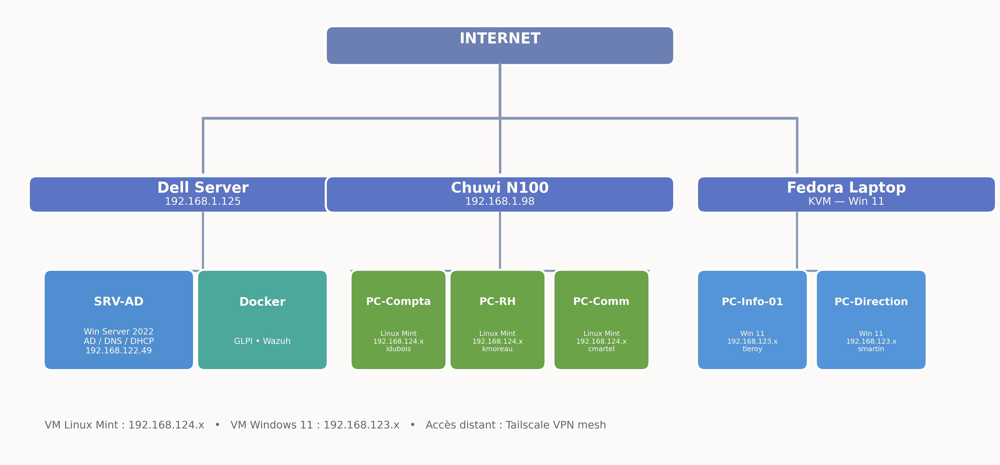
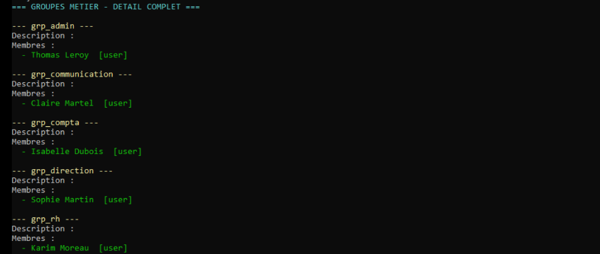
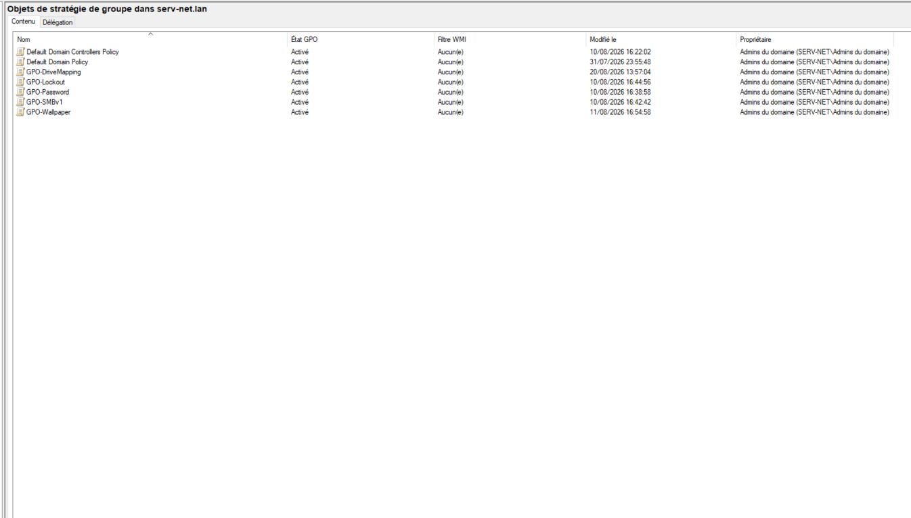
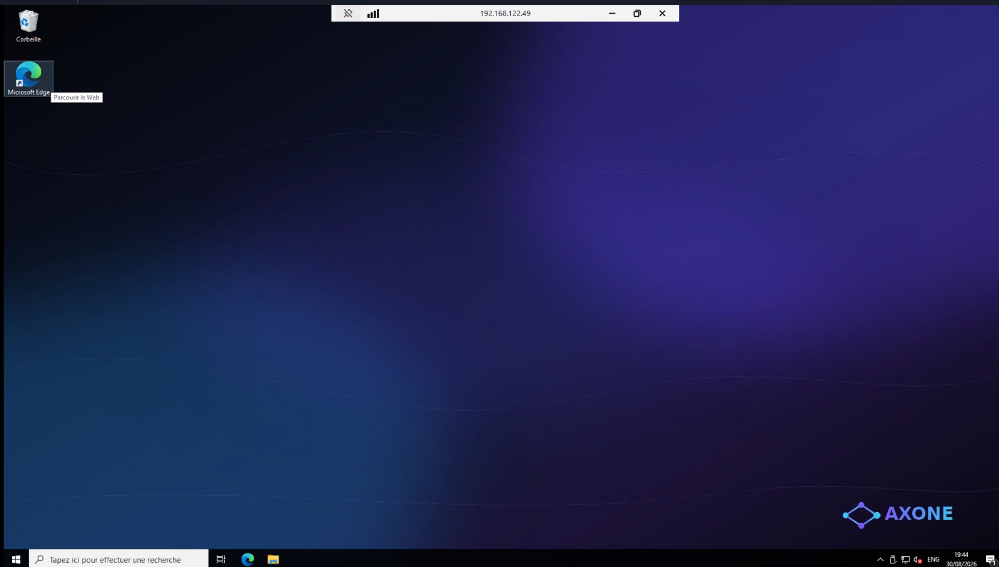
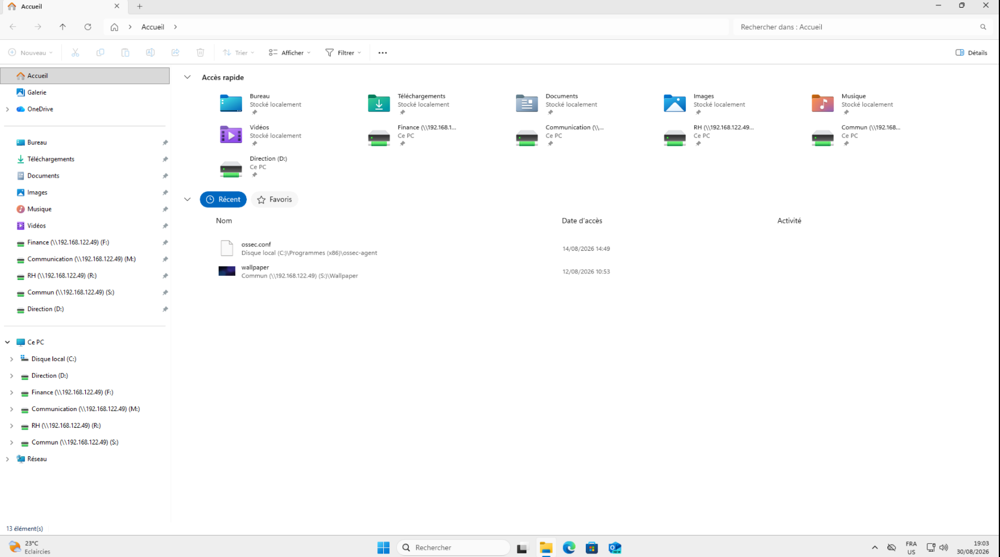
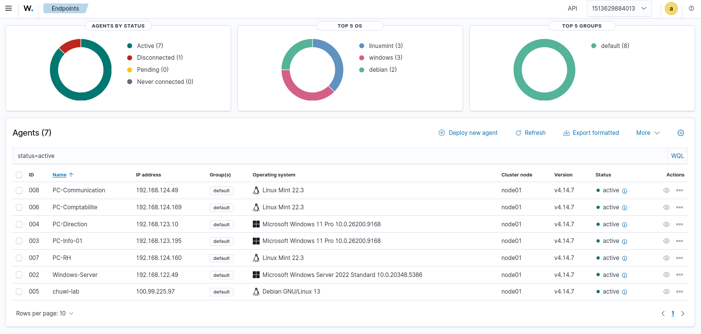

Réseau et accès distant multi-sites
L'infrastructure est répartie sur trois sites — le domicile du dirigeant, l'open space et le télétravail — interconnectés par un réseau privé maillé. Chaque hôte isole ses machines dans un sous-réseau de virtualisation distinct.
| Segment | Adressage | Contenu |
|---|---|---|
| Réseau local | 192.168.1.0/24 | Les deux hôtes du site principal |
| Sous-réseau serveur | 192.168.122.0/24 | Le contrôleur de domaine |
| Sous-réseau Linux | 192.168.124.0/24 | Les trois postes Linux |
| Sous-réseau Windows | 192.168.123.0/24 | Les deux postes Windows |

Pourquoi cette architecture. Le serveur est hébergé au domicile du dirigeant, faute de local technique. Les postes de l'open space et du télétravail doivent malgré tout joindre le contrôleur de domaine. Le réseau privé maillé résout ce problème sans IP fixe et sans ouvrir de port sur la box.
Vue d'ensemble du parc
Six machines, deux systèmes d'exploitation, six rôles. Toutes sont supervisées et inventoriées.
| Machine | Système | Rôle | Supervision |
|---|---|---|---|
| SRV-AD | Windows Server 2022 | Annuaire, DNS, DHCP | Wazuh + GLPI |
| PC-Comptabilité | Linux Mint 22 | Comptabilité | Wazuh + GLPI |
| PC-RH | Linux Mint 22 | Ressources humaines | Wazuh + GLPI |
| PC-Communication | Linux Mint 22 | Communication | Wazuh + GLPI |
| PC-Info-01 | Windows 11 | Informatique | Wazuh + GLPI |
| PC-Direction | Windows 11 | Direction | Wazuh + GLPI |
Active Directory — structure et stratégies
Chaque service dispose de son unité d'organisation, ce qui permet d'appliquer des stratégies différenciées sans dupliquer les règles. C'est le même principe de cloisonnement que pour les partages, mais appliqué à la configuration des postes.

| Stratégie | Effet |
|---|---|
| Mot de passe | 12 caractères, complexité exigée, expiration à 90 jours |
| Verrouillage | Blocage du compte après 5 tentatives |
| Protocoles obsolètes | Désactivation de SMBv1 sur tout le parc |
| Identité visuelle | Fond d'écran d'entreprise sur les postes joints |
| Lecteurs réseau | Mappage automatique des partages selon le groupe |


Partages de fichiers et cloisonnement
Les données sont cloisonnées par service, via des partages accessibles selon l'appartenance aux groupes de l'annuaire. Le même partage est monté indifféremment depuis un poste Windows ou Linux.
| Partage | Groupes autorisés | Contenu |
|---|---|---|
Finance | Comptabilité, direction | Données comptables |
RH | Ressources humaines, direction | Paie et contrats |
Communication | Communication, direction | Communication interne |
Commun | Tous les utilisateurs du domaine | Documents partagés |
Direction | Direction | Documents de direction |

Supervision SIEM
Un système de gestion des événements de sécurité collecte les journaux de sept agents répartis sur l'ensemble du parc. Une étude de cas a porté sur vingt-cinq vulnérabilités critiques, analysées et priorisées selon un cycle documenté : détection, analyse, traitement, vérification.

Ce que la supervision apporte concrètement. Sans elle, une panne silencieuse se découvre par l'utilisateur qui appelle. Avec elle, elle se découvre par une alerte. C'est la différence entre un délai de détection mesuré en heures et un délai mesuré en minutes.
Gestion de parc
- Inventaire automatisé des postes, agent déployé par automatisation
- Entité dédiée au parc, pour le cloisonner d'autres clients
- Administrateur délégué, dont les droits s'arrêtent à cette entité
Automatisation
La configuration des postes Linux est décrite dans des rôles, appliqués depuis un poste de contrôle. C'est l'équivalent des stratégies de groupe pour le parc Linux, avec la même promesse : déploiement centralisé, reproductible, versionné.
| Rôle | Objet |
|---|---|
wallpaper | Déploiement de l'identité visuelle sur les postes |
wazuh-agent | Installation et rattachement des agents SIEM |
maj-auto | Mises à jour de sécurité automatiques au démarrage |
glpi-agent | Déploiement des agents d'inventaire |
dns-fix | Correctif de résolution, appliqué de façon uniforme |
Mises à jour automatiques
Chaque machine applique ses mises à jour de sécurité seule, avec traçabilité dans un journal dédié. Trois méthodes coexistent selon le système, pour un résultat identique.
| Machine | Méthode |
|---|---|
| Serveur | Mises à jour de sécurité seules, planifiées à 01:00 |
| Hôte Linux | Service déclenché au démarrage |
| Trois postes Linux | Même service, déployé par automatisation |
Ce que démontre ce montage
- Un annuaire unique pour un parc hétérogène : cinq postes Windows et Linux coexistent, avec les mêmes règles d'identité et de mot de passe.
- Un cloisonnement porté par l'annuaire et non par une arborescence de dossiers : les droits suivent le groupe, pas le chemin.
- Un accès distant sans port exposé sur Internet, ce qui élimine la surface d'attaque la plus courante.
- Une supervision effective de sept agents, avec une méthode de traitement des vulnérabilités qui va jusqu'à la vérification.
- Une configuration rejouable : ce que la main applique une fois et perd, le code le réapplique à l'identique.
- Des mises à jour tracées sur chaque machine, sans intervention humaine ni dérive dans le temps.
Limites assumées
Le serveur est hébergé au domicile du dirigeant, faute de local technique. La disponibilité dépend donc de la connexion de ce site, et l'architecture repose sur un point unique pour l'annuaire. Une montée en charge en production imposerait un second contrôleur de domaine et un site d'hébergement distinct.
Les postes Windows reçoivent leur configuration par stratégies de groupe, les postes Linux par automatisation. Deux mécanismes pour un même résultat : c'est la conséquence directe de l'hétérogénéité du parc, et non un choix d'architecture.